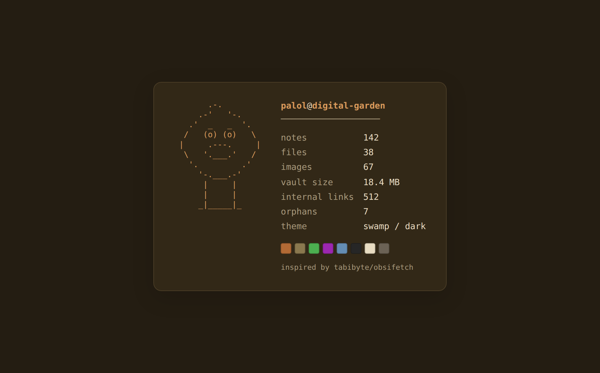
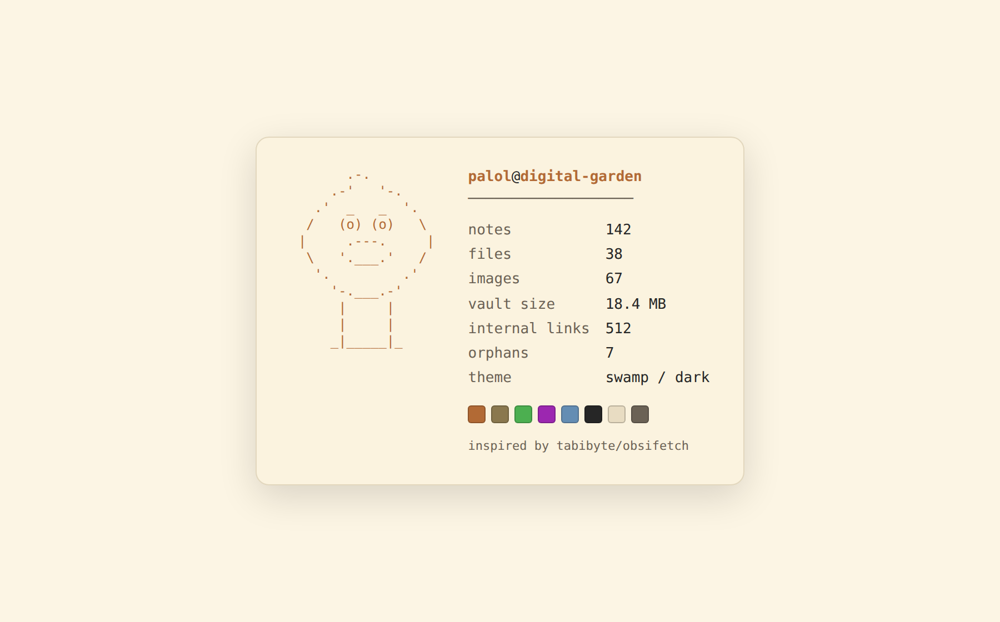

dg-obsifetch
A neofetch for your vault — build-time stats as a text route and a footer card.


Renders a neofetch-style readout of your Digital Garden — file counts and sizes, orphan files, internal links, and theme — computed at build time. It ships two surfaces from one data source: a curl-able /neofetch.txt plain-text route, and a styled footer card with ASCII art and live theme-color swatches. A tribute to the tabibyte/obsifetch Obsidian plugin, which does this inside the app.
/neofetch.txt but no visual embed (or a fragile fetch-into-<pre>). This ships a proper inline card — no client fetch, no loading flash, JS-off safe — and keeps the tabibyte/obsifetch tribute credit on both surfaces.
How it works
A single Eleventy data file, vaultStats.js, recursively scans your notes/files/img trees once per build and exposes vaultStats to every template. Both surfaces read it, so the numbers always agree. The 8 palette squares map to your DG theme tokens, so they track light/dark and any theme swap for free.
_data/vaultStats.js → build scan → vaultStats
→ /neofetch.txt (plain text: ASCII + stats) [curl-able]
→ footer card (ASCII + stats + swatches) [visual]How to use it
Copy the skill folder into your agent's skills directory, then in your Digital Garden repo ask:
git clone https://github.com/palol/skills-zoo.git
cp -r skills-zoo/skills/dg-obsifetch ~/.claude/skills/(or ~/.agents/skills/)
Use the dg-obsifetch skill to add a neofetch-style vault-stats readout to my digital garden. Verify prerequisites first, install the data engine, the
/neofetch.txtroute, and the footer card into user-owned paths, set my domain, then build and walk me through verification.
What it touches
- Data:
_data/vaultStats.js— a read-only build-time scan (file counts/sizes, orphan detection,[[wikilink]]counting, theme info). - Text route: root
neofetch.txt.njk→/neofetch.txt(ASCII mushroom + stats + credit). - Component (autoloaded, no layout edits): a footer-slot card rendering the same stats with theme-color swatches.
- Styles: appended to
custom-style.scss; card + swatches inherit your DG theme tokens, so light/dark just work.
notes/files/img trees to compute stats. It's read-only — no network, no writes, no plugin-core edits — and fully reversible via git. Review assets/vaultStats.js before adding it.
What's in the box
- SKILL.md — invariants, install workflow, prerequisites, risk
- assets/vaultStats.js — build-time vault analytics engine
- assets/neofetch.txt.njk — the
/neofetch.txtplain-text route - assets/zz-obsifetch.njk — footer slot: the HTML stats card
- assets/obsifetch.scss — styles (TUNING KNOBS + swatch palette on top)
- references/architecture.md — data engine, two surfaces, swatch mapping
- references/tuning.md — every knob + trims (text-only, card-only)
- references/verify.md — data / route / card / a11y / attribution QA
Prerequisites
- An Obsidian Digital Garden (oleeskild plugin + Eleventy) repo with user-component autoloading.
- Standard DG tree:
src/site/notes, optionalsrc/site/files,src/site/img. THEME/BASE_THEMEenv for the theme line (optional; degrades todefault/light).
Scope is Digital Garden only — the notes layout, theme env vars, and theme tokens are DG-specific.